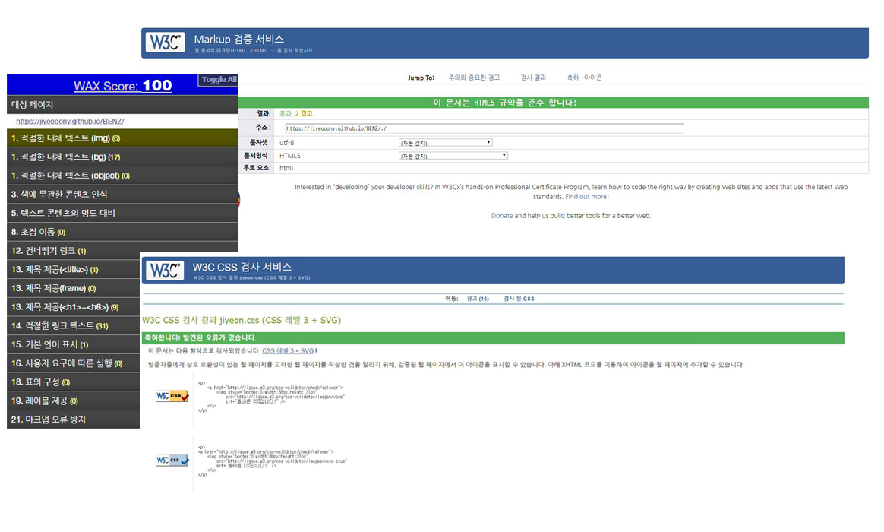
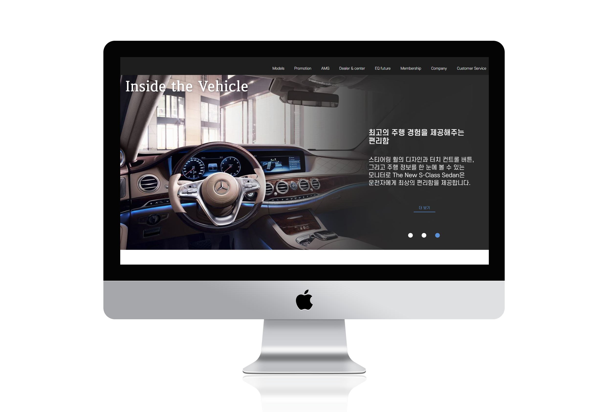
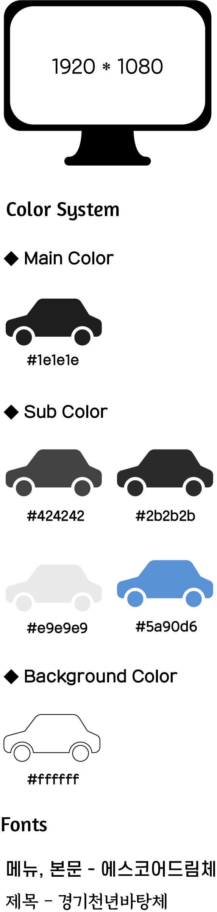
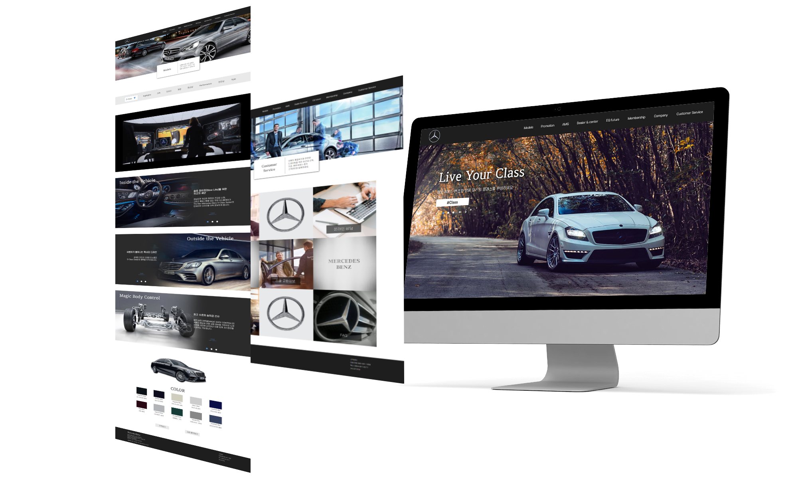
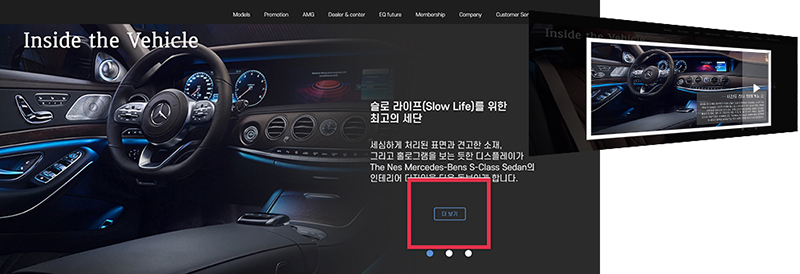
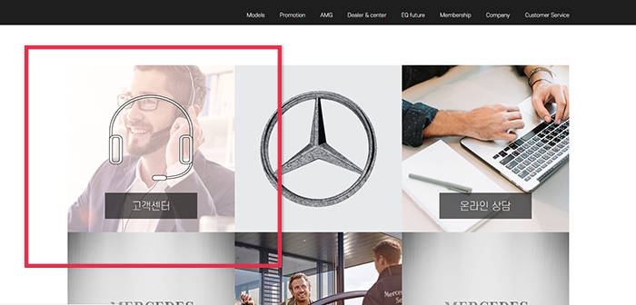

DETAIL VIEW
 HTML5, CSS3, JQEURY를 사용하여 사용자 시선의 접근성과 웹표준을 준수하며 제작하였습니다
HTML5, CSS3, JQEURY를 사용하여 사용자 시선의 접근성과 웹표준을 준수하며 제작하였습니다
"모든 이용자들의 사용성을 극대화하기 위해 웹 접근성 연구소의 콘텐츠 제작기법을 준수하였으며
다양한 브라우저에서 동일한 결과를 볼 수 있는 최적화 된 웹사이트로 구현하였습니다."



-
PAGE VIEW
"블랙 앤 화이트를 활용해"
"고급스러우며 심플함을 표현" -
여러 차례 걸친 기획 검토와 설계로 벤츠만의 독보적인 세련되고 고급스러운 디자인을 표현하고
세계 최고의 기술력을 중점적으로 나타탤 수 있도록 제작하였습니다.
현재 홈페이지는 브랜드의 높은 가치에도 불구하고 국내 실정과 맞지 않는 디자인, 레이아웃으로
인해 접근성이 크게 떨어집니다. 또한, 인터렉티브 요소의 부재로 인한 정보 집중력이 하락됩니다.
20대 후반부터 30대 후반의 고객들에게 어필하고자 심플한 레이아웃과 트렌디하고 고급스러운
비주얼을 살려 시각적으로 표현하였습니다.
팀작업으로 진행 된 프로젝트로 직접 디자인하고 구현시킨 페이지는 모델 페이지, 고객센터 페이지입니다.
메인 페이지는 팀 내에서 디자인 파트와 퍼블리셔 파트를 구분하여 디자인을 전적으로 맡아서 했습니다.


POINT VIEW
사용자의 접근성을 고려한 자세한 설명 KEY point!!
"사용자의 접근성을 고려하여 한 페이지에서 간단한 설명과 자세한 설명을 한번에 볼 수 있도록 구성."
사용자에게 정보전달을 함과 동시에 사용자의 편의를 위해 수평 슬라이더와 모달 기능을 추가하여 이미지 제작.
◎ 모델 페이지
모델 현재 페이지엔 간단한 설명을, 모달창에는 자세한 설명을 써 놓았습니다.
◎ 고객센터 페이지
마우스를 갖다댈시, 불투명한 이미지 위에 아이콘이 나타납니다.